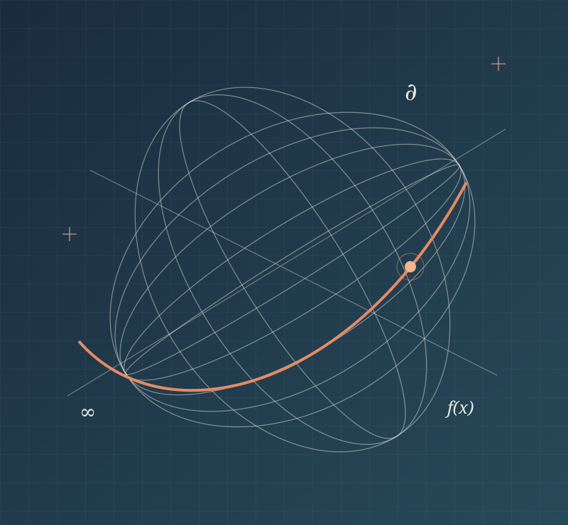

What can AI help us discover?
Research agents, computational experiments, and new ways to explore mathematical questions.
Reasoning. Proof. Discovery.
Bringing mathematicians and AI researchers together to explore new tools, test ideas, and work on the problems that matter.
A December meeting at CUHK-Shenzhen. Details are taking shape.

From an intriguing output to a convincing argument: a day to examine what AI can contribute to research, and what it takes to trust the result.
Research agents, computational experiments, and new ways to explore mathematical questions.
Formal reasoning, independent checks, and careful evaluation of success and failure.
Concrete questions from the community, shared experiences, and possibilities for joint work.
A proposed format that leaves room to ask questions, compare approaches, and develop ideas together.
View the proposed timetableThe meeting is planned at CUHK-Shenzhen’s Longgang campus. Find the university address, nearby metro stations, and the information to check before you travel.
How to get to the event